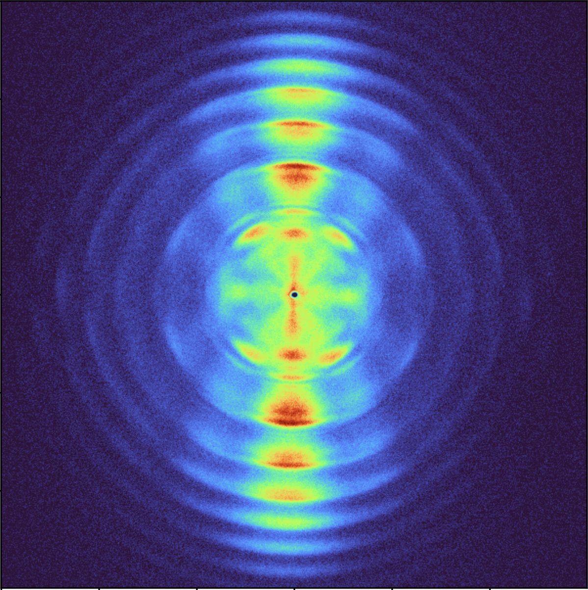
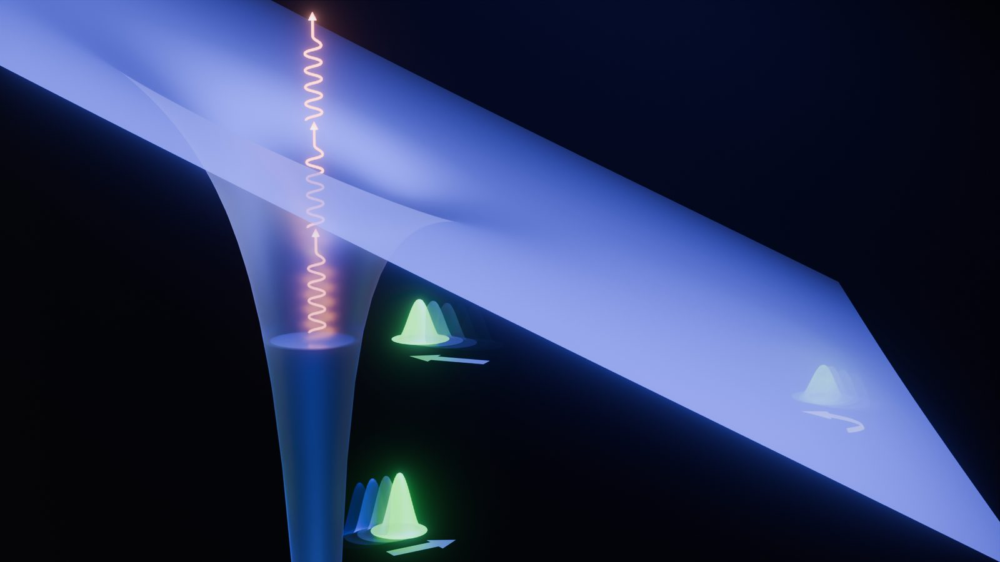
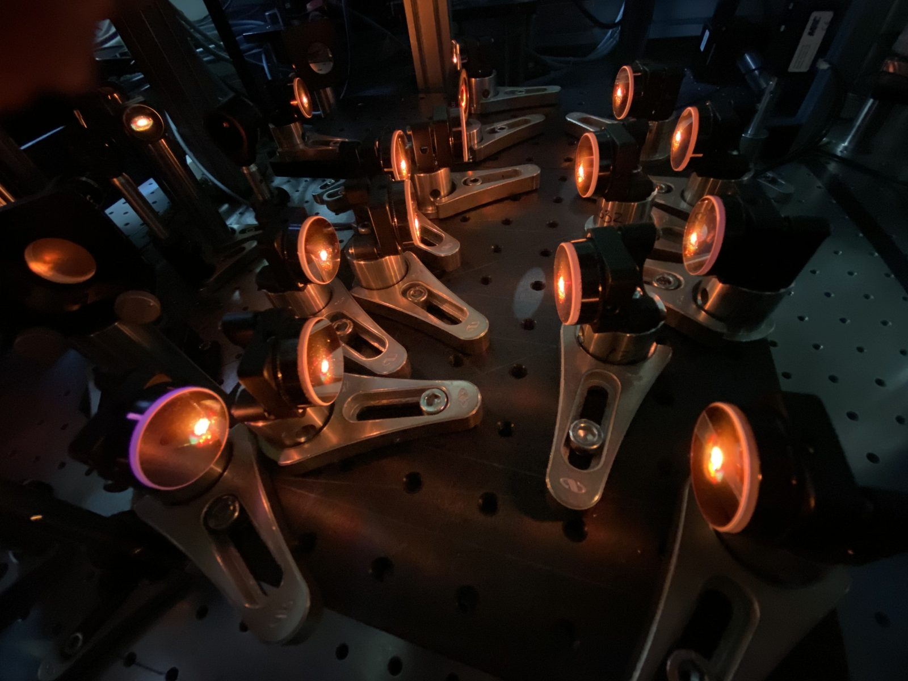
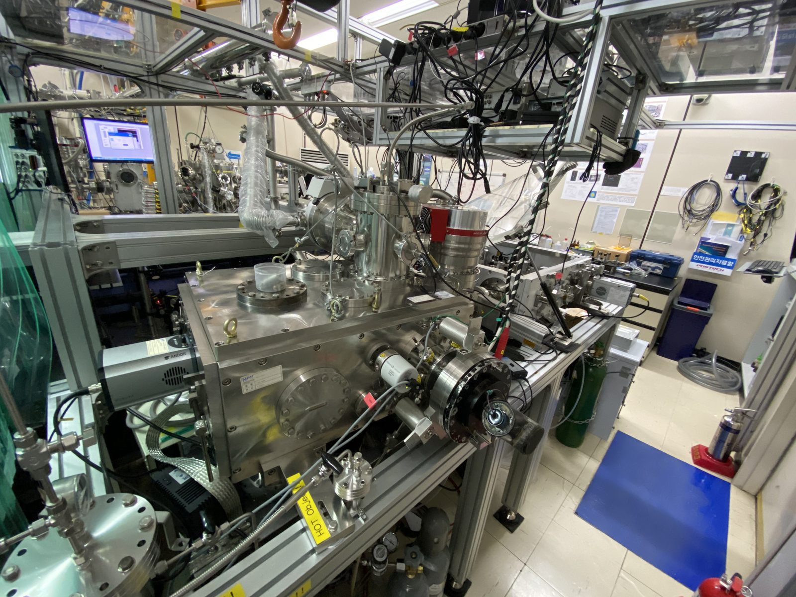
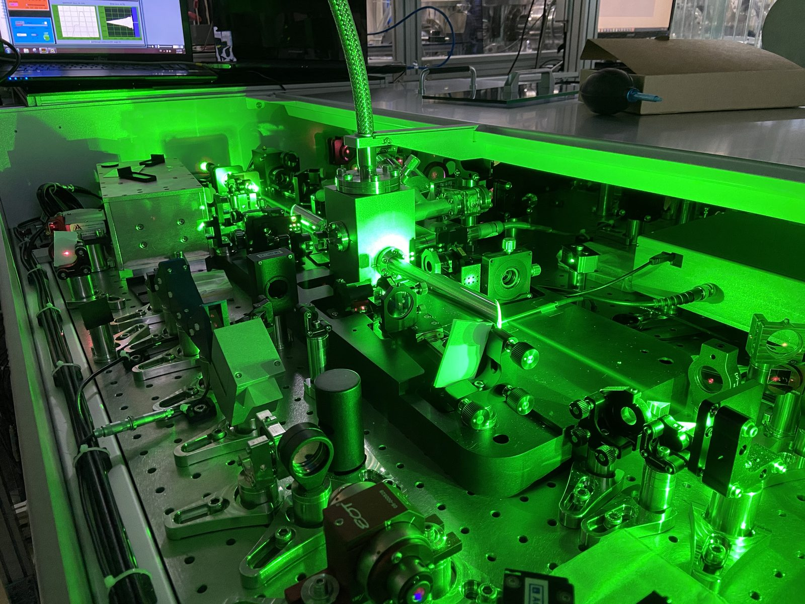
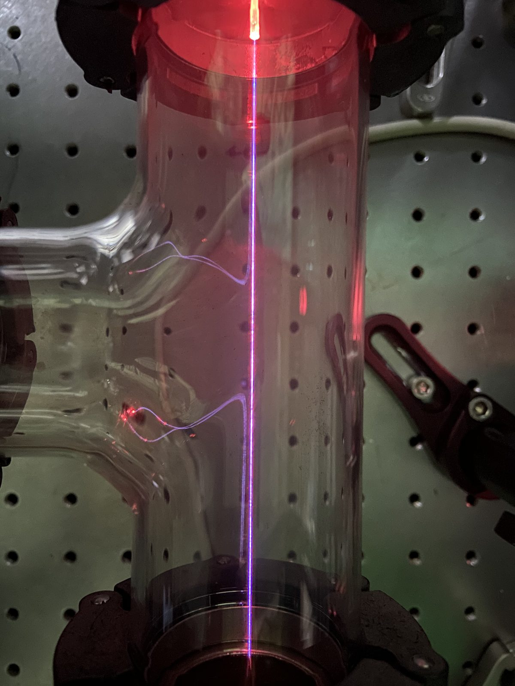
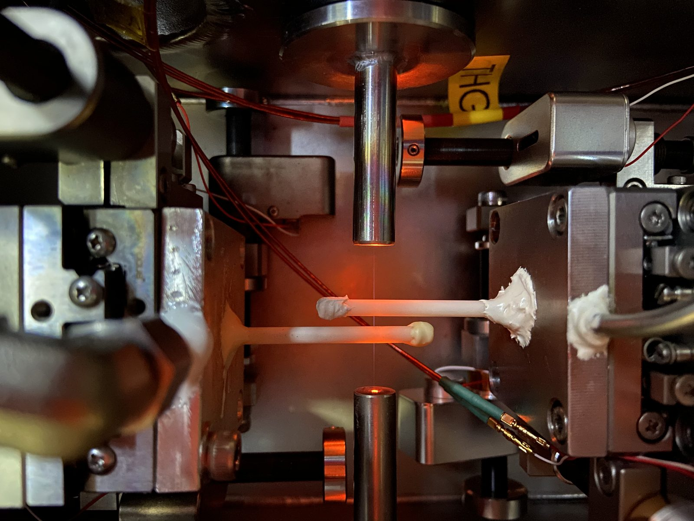
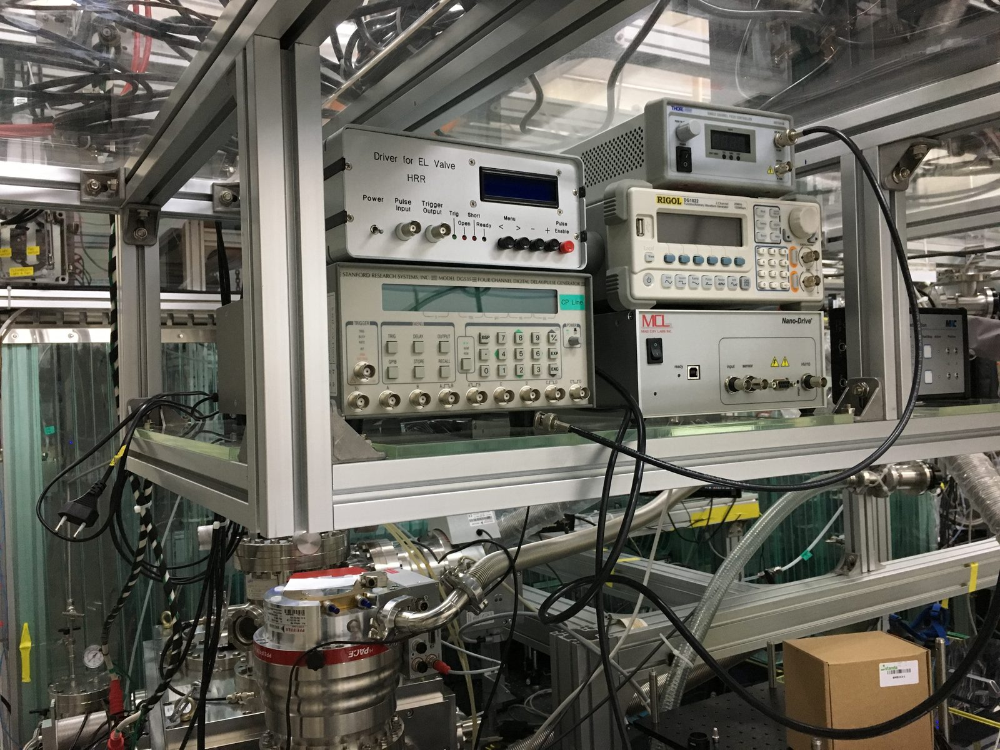
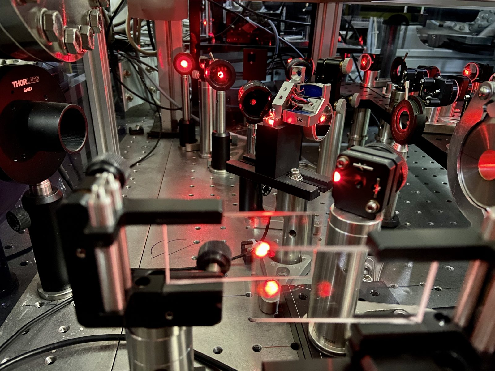

2026
Nonclassical Cutoff Fluctuations in Squeezed-Light-Driven High-Harmonic Generation
T. Khurelbaatar, R.T. Sang, I. Litvinyuk
Phys. Rev. Research 8, 043107 (2026)
I study how electrons respond to intense classical and quantum light on their natural, attosecond timescale, combining few-cycle laser experiments with strong-field theory.

Born and raised in Mongolia, my primary interest is exploring the microcosm on its natural timescale when interacting with extremely short and intense classical/quantum light. I obtained an MS in theoretical quantum optics from the National University of Mongolia and a PhD in experimental attosecond physics from POSTECH in South Korea. Today, I am a Research Fellow at Quantum and Advanced Technologies Research Institute (QUATRI), Griffith University in Brisbane, bridging theory with cutting-edge experimentation.
My expertise includes few-cycle pulse generation, high-harmonic generation (HHG), and utilizing CEP-stabilized femtosecond technology with precise post-compression techniques. I also specialize in the end-to-end construction and optimization of attosecond beamlines to explore these fundamental dynamics.
Outside of academia, I am a nature lover. I enjoy being outdoors, traveling, capturing moments through photography, and cycling around Brisbane. I also spend a fair amount of time exploring local cafes in search of a great coffee.
A breakdown of my core technical competencies and research areas in experimental physics.

Unraveling the interplay of electrons in atoms, focusing on charge migration and under-the-barrier dynamics.

Achieving single-cycle optical pulses crucial for high-precision time-resolved experiments.

Investigating fundamental physical processes and quantum dynamics in intense laser fields.
Pushing the boundaries of precision measurement beyond the standard quantum limit using strong fields.
Recent research articles, journal papers, and contributions to attosecond physics.
T. Khurelbaatar, R.T. Sang, I. Litvinyuk
Phys. Rev. Research 8, 043107 (2026)
T. Khurelbaatar, R.T. Sang, I. Litvinyuk
arXiv 2602.13667 (2026)
T. Khurelbaatar, M. Klaiber, S. Sukiasyan, K.Z. Hatsagortsyan, C.H. Keitel, D.E. Kim
Phys. Rev. Lett. 134, 213201 (2025)
T. Khurelbaatar, J. Heo, S.G. Yu, X.Y. Lai, X.J. Liu, D.E. Kim
Light Sci. Appl. 13, 108 (2024)
T. Khurelbaatar, A. Gliserin, J.H. Mun, J. Heo, Y. Lee, D.E. Kim
Appl. Sci. 11, 6840 (2021)
Small browser-based utilities and simulators I built for everyday lab and teaching use.
A specialized laboratory tool for experimental physicists to quickly convert between energy units (eV, nm, Hz, K), pressure, and laser intensity parameters commonly used in attosecond and strong-field science.
An interactive 3D simulation tool for visualizing hydrogenic electron probability density clouds and atomic orbitals in real-time right in your browser.
Visualize phase-space distributions, quantum noise reduction, and uncertainty principle dynamics in squeezed states of light.
A personal notebook of blog posts, technical references, and code snippets useful for experimental physics.
My PhD research focused on the development of advanced techniques for generating and characterizing attosecond pulses in the deep ultraviolet and extreme ultraviolet regimes.
A simple script used to simulate attosecond streaking spectrograms based on the Strong Field Approximation (SFA).
A cheat sheet of phase-matching conditions, pressure gradients, and absorption limits for High Harmonic Generation in various rare gases.
Glimpses into the experimental setups, beamlines, and day-to-day life in the attosecond physics lab.




